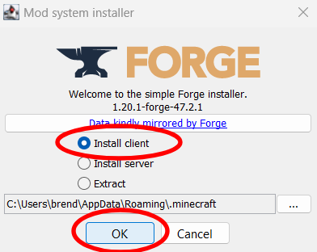
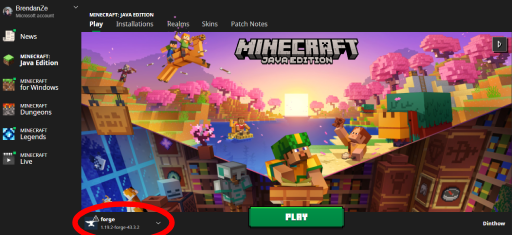

Welcome to the guide! By the end, you'll be able to play modded Minecraft. We'll walk through each step with clear instructions and visuals.
Minecraft mods offer an exciting way to enhance your gaming experience by introducing new features, gameplay mechanics, and content to the beloved sandbox game. These user-created modifications open up a world of possibilities, from adding new biomes and creatures to enhancing graphics and gameplay. However, to effectively use these mods, players often rely on mod loaders like Forge. Forge Mod Loader is a powerful tool that simplifies the installation and management of Minecraft mods, ensuring compatibility and ease of use. In this context, we'll explore the benefits of installing Minecraft mods and delve into what Forge Mod Loader is and why it's essential for modding enthusiasts.
To begin, ensure that Java is installed on your computer. You can easily install Java by following these steps:
Step 1: Visit the official Java website.
Step 2: On the website, follow the "Download Java" buttons, highlighted in green.
Step 3: Follow the prompts and instructions provided by the installation wizard to complete the Java installation.
By following these steps, you'll have Java installed on your computer and ready for use.
If you haven’t purchased Minecraft already then visit the official Minecraft website before continuing on.
Step 1: Select "Java Edition" and proceed with the purchase. Once done, download the game installer.
Step 2: Run the downloaded file and follow the on-screen instructions to install.
Step 3: After installation, launch Minecraft from your applications or start menu to ensure it works.
Now that you have the latest versions of Minecraft and Java installed on your machine, it is time to install the Forge Mod Loader to manage and activate your mods.
Step 1: Go to the forge website and under “Minecraft Version” click on the version of minecraft that you wish to play on and install mods for.
Step 2: Once selected, underneath the text “Download Latest” section, click on the “Installer” option.
A jar file should’ve been downloaded.
Step 3: Run the Jar file using Java and a window should pop up. On MacOS, you must open the installer in the finder using “Open with”
Step 4: Make sure “Install Client” is selected and click the “OK” button.
Step 5: Wait for the installation process to complete. Once finished, the next time you load up the Minecraft Launcher, you should see left to the “Play Button” your forge version.
Step 6: If you do not see Forge there, click what is circled in the red above and a drop down menu will appear, if for some reason it doesn’t show up there either, some further steps are required.
Step 7: Up near the top of the launcher there is another “Play Tab”, to the right of it click the “Installations” tab. Click “New Installation” to create a new installation profile.
Step 8: A new menu will pop up. Give your installation profile a name, then under versions, find the version of forge you installed.
Step 9: Press the “Create” button in the bottom right and you are finished.
You now have successfully installed Forge Minecraft onto your device.
One of the most popular websites for finding Mods is Curse Forge.
Step 1: Go to the Curse Forge website.
Step 2: Use the search bar to find the mods you would like to use. An example mod would be this one here.
Step 3: Once you find a mod, double check that it is for the correct version of Forge.
Step 4: Click the “Files Tab” to make sure you install the correct version of the mod.
Step 5: Click on the version you wish to install.
Once the file is in your downloads folder, next is to move it into your mods folder.
Step 1: Open up your Downloads folder, right click on the mod you just downloaded, and click on “Cut”
Step 2: Once the Mod is on your clipboard, open up the minecraft launcher once again. Go to the “Installations” tab and next to your forge installation profile, click the folder icon. That will bring you to your Minecraft directory.
Step 3: In your minecraft directory, search for a folder called “mods” and open it. If there is no such folder then create a new folder, name is “mods” and then open it.
Step 4: Inside of the “mods” folder, all you need to do is “paste” in your mod by right clicking somewhere inside of the folder and clicking “paste”.
Congratulations! You have successfully installed Java, Minecraft, Forge, and your new mods!
Generally, mods from reputable sources are safe. However, always exercise caution and only download mods from trusted websites to minimize the risk of viruses or malware.
Yes, you can use multiple mods together, but compatibility issues can arise. Be cautious and consult mod compatibility lists or guides to avoid conflicts.
Mods can affect game performance. Consider using optimization mods or adjusting settings to improve performance when using resource-intensive mods.
Yes, mods can work alongside resource packs and shaders, but compatibility can vary. Ensure that mods, packs, and shaders are compatible with your Minecraft version.
Troubleshoot by disabling mods one by one to identify the problematic one. Review crash reports, seek help from modding communities, or contact the mod developer for assistance.
Yes, you can create your own Minecraft mods using tools like Minecraft Forge, Fabric, or other modding frameworks. Learning resources and tutorials are available to help you get started.